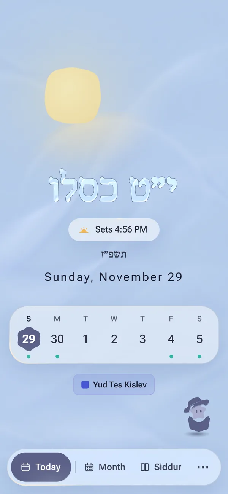
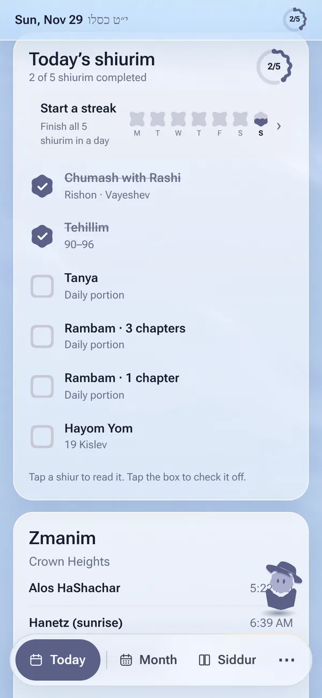
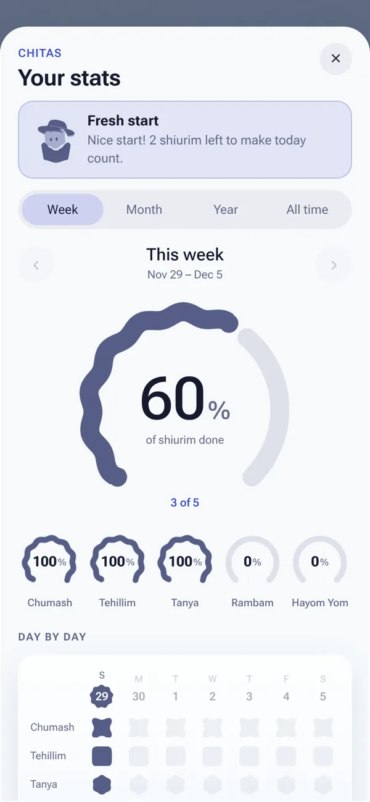
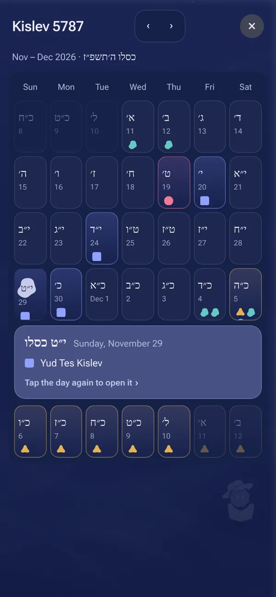

Chabad Calendar
לוח שנה חב״די
A whole new look and feel. The Hebrew date under a living sky, zmanim for where you are, today’s Chitas, Rambam and Hayom Yom, a siddur with just what’s said today, and reminders that ring even without internet.
justaboredbocher.github.io/CDate
See it in action




Install in three steps
Tap “Download for Android” above. The file is called ChabadCalendar.apk.
Tap the downloaded file. If Android asks, tap Settings, turn on Allow from this source, then go back.
Tap Install, open the app and create an account. A short tour shows you around.
What’s inside
The Hebrew date under a sky where the sun and moon change shape as they cross it, every holiday and what to do for it.
Chumash, Tehillim, Tanya, Rambam and Hayom Yom, in Hebrew or English. Finish one and it checks itself off as your streak grows.
Opens on the tefillah for right now with only what’s said today. Slide between tefillos, and an arrow shows which way to daven.
Sunrise, Shema, candle lighting and Shabbos times, worked out for your location.
“Chavrusa with Adam every night at 8, remind me an hour before.” The assistant sets it up for you.
Reminders ring on time even with no internet or VPN, and a home-screen widget shows today at a glance.
Ready for 2.0?
Free. Your account is saved online, so everything comes back on a new phone.
Download for Android